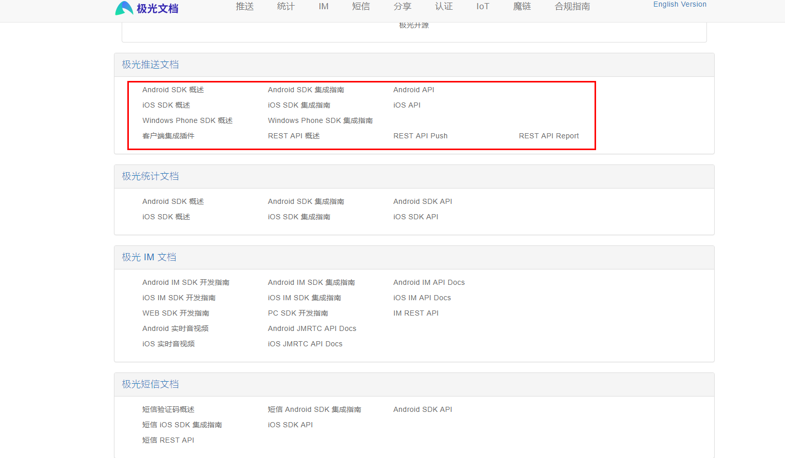
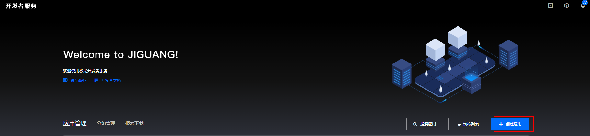
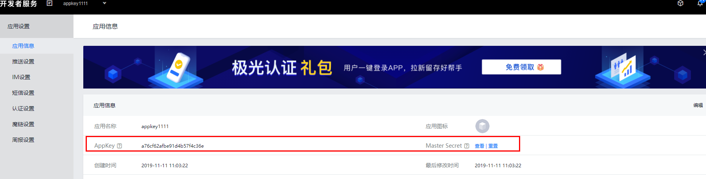
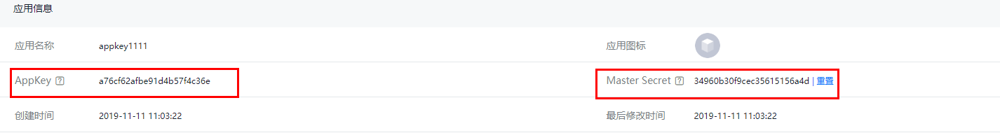
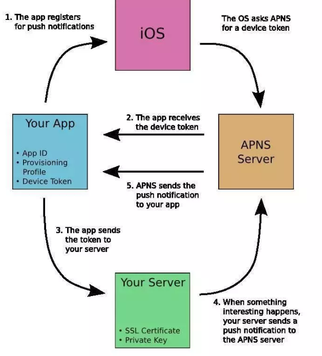

Date:2019-11-11
读前思考：
极光推送是什么？
极光推送是能做什么？有什么优势？
怎么根据业务需求来实现极光推送服务呢？
极光推送（JPush）是独立的第三方云推送平台，致力于为全球移动应用开发者提供移动消息推送服务。
极光官方文档：https://docs.jiguang.cn/
极光社区：https://community.jiguang.cn/
遇到问题，可以在这里找到相应的解决办法。
服务端 REST API ：https://docs.jiguang.cn/jpush/server/push/server_overview/
server_sdk：https://docs.jiguang.cn/jpush/server/server_sdk/
JPush REST API 的 Java 版本封装开发包，是由极光推送官方提供的，一般支持最新的 API 功能。
对应的 REST API 文档：[REST API - Push](https://docs.jiguang.cn/jpush/server/push/rest_api_v3_push/),
[REST API - Report](https://docs.jiguang.cn/jpush/server/push/rest_api_v3_report/).
本开发包 Javadoc：[API Docs](http://jpush.github.io/jpush-api-java-client/apidocs/)
版本更新：[Release页面](https://github.com/jpush/jpush-api-java-client/releases)

先注册账号：https://www.jiguang.cn/
登录账号创建应用获取AppKey以及Master Secret

开发者服务： https://www.jiguang.cn/dev2/#/app/a76cf62afbe91d4b57f4c36e/info

示例代码：
JPushUtil：
package com.joey.jpush.test1;
import cn.jpush.api.push.model.Platform;
import cn.jpush.api.push.model.PushPayload;
import cn.jpush.api.push.model.audience.Audience;
import cn.jpush.api.push.model.notification.Notification;
import java.util.List;
/**
* 极光推送工具类 https://github.com/
* @Probject JPushUtil
* @Create By Joey
* @Create IN 2019-11-12
**/
public class JPushUtil {
/**
* 所有平台，所有设备，内容为 content 的通知
* @param content
* @return
*/
public static PushPayload buildPushObjectAllAlert(String content) {
return PushPayload.alertAll(content);
}
/**
* 根据 设备终端ID 推送消息
* @param regesterIds 设备终端ID集合
* @param content 内容
* @return
*/
public static PushPayload buildPushObjectByregesterIds(List<String> regesterIds, String content) {
return PushPayload.newBuilder().setPlatform(Platform.all())
.setAudience(Audience.registrationId(regesterIds))
.setNotification(Notification.alert(content))
.build();
}
/**
* 所有平台，推送目标是别名为 "alias"，通知内容为 TEST
* @param alias
* @param content
* @return
*/
public static PushPayload buildPushObjectAliasAlert(String alias, String content) {
return PushPayload.newBuilder().setPlatform(Platform.all()).setAudience(Audience.alias(alias))
.setNotification(Notification.alert(content)).build();
}
}JpushService:package com.joey.jpush.test1;
import java.util.List;
public interface JpushService {
/**
* 所有平台推送消息内容
* @return
*/
public boolean pushAll();
/**
* 指定的设备推送消息内容
* @param regeSterIds
* @param msg
* @return
*/
public boolean pushByRegesterId(List<String> regeSterIds, String msg);
}JpushServiceImpl:package com.joey.jpush.test1;
import cn.jiguang.common.resp.APIConnectionException;
import cn.jiguang.common.resp.APIRequestException;
import cn.jpush.api.JPushClient;
import cn.jpush.api.push.PushResult;
import cn.jpush.api.push.model.PushPayload;
import org.slf4j.Logger;
import org.slf4j.LoggerFactory;
import org.springframework.stereotype.Service;
import java.util.List;
/**
* @Probject JpushServiceImpl
* @Create By Joey
* @Create IN 2019-11-12
**/
@Service("jpushService")
public class JpushServiceImpl implements JpushService {
//AppKey
private final static String appKey = "a76cf62afbe91d4b57f4c36e";
//Master Secret
private final static String masterSecret = "34960b30f9cec35615156a4d ";
/**
* 保存离线的时长。秒为单位。最多支持10天（864000秒）。
* 0 表示该消息不保存离线。
* 即：用户在线马上发出，当前不在线用户将不会收到此消息。
* 此参数不设置则表示默认，默认为保存1天的离线消息（86400秒)。
*/
private static long timeToLive = 60 * 60 * 24;
private static JPushClient jPushClient = null;
private static final Logger logger = LoggerFactory.getLogger(JpushServiceImpl.class);
@Override
public boolean pushAll() {
jPushClient = new JPushClient(masterSecret, appKey, (int) timeToLive);
boolean flag = false;
try {
String title = "小姐姐,再抱抱我.真的好舒服呢";
//推送对象
PushPayload payload = JPushUtil.buildPushObjectAllAlert(title);
//推送结果
PushResult result = jPushClient.sendPush(payload);
if (null != result) {
flag = true;
}
} catch (APIConnectionException e) {
logger.error("Connection error. Should retry later. ", e);
flag = false;
} catch (APIRequestException e) {
logger.error("Error response from JPush server. Should review and fix it. ", e);
logger.info("HTTP Status: " + e.getStatus());
logger.info("Error Code: " + e.getErrorCode());
logger.info("Error Message: " + e.getErrorMessage());
logger.info("Msg ID: " + e.getMsgId());
flag = false;
}
return flag;
}
@Override
public boolean pushByRegesterId(List<String> regeSterIds, String msg) {
jPushClient = new JPushClient(masterSecret, appKey);
boolean flag = false;
try {
//推送对象
PushPayload payload = JPushUtil.buildPushObjectByregesterIds(regeSterIds, msg);
//PushResult 表示服务端推送结果
PushResult result = jPushClient.sendPush(payload);
if (null != result) {
flag = true;
}
} catch (APIConnectionException e) {
logger.error("Connection error. Should retry later. ", e);
flag = false;
} catch (APIRequestException e) {
logger.error("Error response from JPush server. Should review and fix it. ", e);
logger.info("HTTP Status: " + e.getStatus());
logger.info("Error Code: " + e.getErrorCode());
logger.info("Error Message: " + e.getErrorMessage());
logger.info("Msg ID: " + e.getMsgId());
flag = false;
}
return flag;
}
}注意：appKey和masterSecret是从你创建应用的时候，生成的。

做完测试之后，推送的原理是什么？
推送是手机中非常常见的功能了，可是在实现上iOS和Andriod却有很大的差别。

如上图：
1.你的IOS应用需要去注册APNS消息推送功能。
2.当苹果APNS推送服收到来自你应用的注册消息就会返回一串device token给你（很重要）
3.将应用收到的device Token传给你本地的Push服务器。
4.当你需要为应用推送消息的时候，你本地的推送服务器会将消息，以及Device Token打包发送到苹果的APNS服
5.APNS再将消息推送给目的iphone